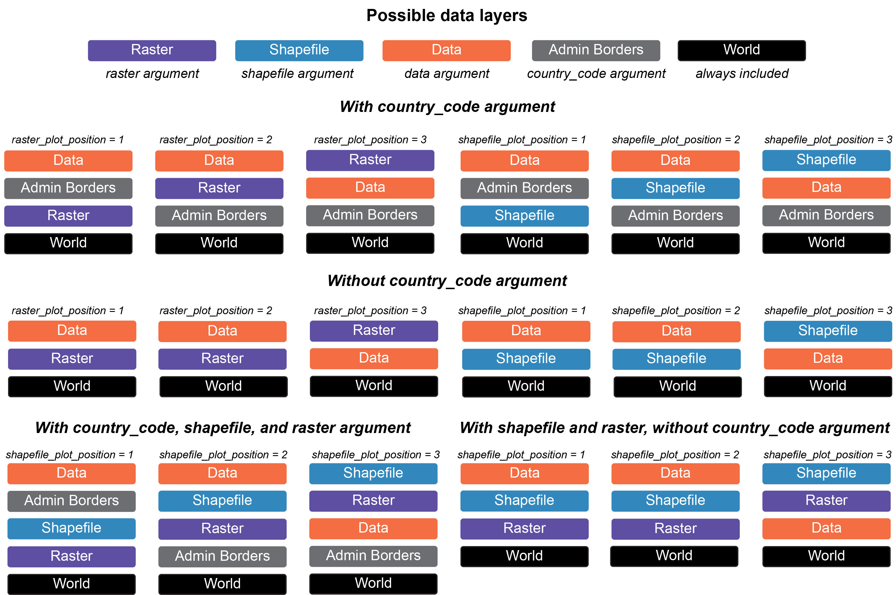
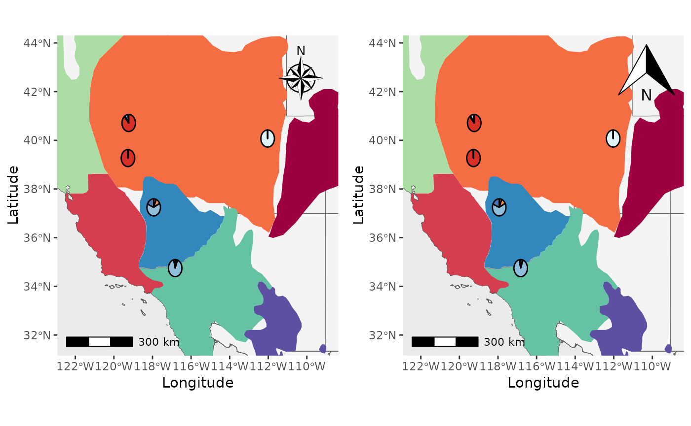

Making Maps with PopGenHelpR
Source:vignettes/articles/PopGenHelpR_MakingMaps.Rmd
PopGenHelpR_MakingMaps.RmdPurpose
This document contains code to demonstrate how to use PopGenHelpR to create maps. The examples provdied are not comprehensive, but they should give you a solid foundation. Please reach out if you have any questions or need any help.
How do maps work in PopGenHelpR?
Maps in PopGenHelpR are built using
[ggplot2](https://ggplot2.tidyverse.org/),
[terra](https://rspatial.github.io/terra/),
[sf](https://cran.r-project.org/web/packages/sf/index.html),
[geodata](https://cran.r-project.org/web/packages/geodata/index.html),
and [ggspatial](https://paleolimbot.github.io/ggspatial/).
PopGenHelpR uses these packages to build maps in layers, that are
stacked on top of each other to create our final maps. Without
shapefiles and rasters, PopGenHelpR will just plot your data (i.e.,
coordinates, piecharts) on top of a basemap, which may or may not
include administrative borders (i.e., states). Then, when users add
shapefiles or a raster (shapefile and raster
arguments, respectively) we can manipulate the relationship of those
layers using the shapefile_plot_position and
raster_plot_position arguments. We have created a
visualization to help users understand the plot_position
arguments in different scenarios (see figure below).

Conveniently, users can include any administrative borders in the
geodata package using the country_code
argument. This expands the utility of PopGenHelpR by providing data for
the entire world, not just the United States of America. Users can also
add a scale bar and north arrow (you can change the style, see below).
Altogether, this allows users to create publication quality maps without
the need for expensive liscences or subscriptions.
Notes on PopGenHelpR maps
There are a few things to be aware of with PopGenHelpR’s mapping functions.
- You will get an inaccurate scale warning. This is expected because
we are using unprojected data. If this causes serious concern please
email us for help. We do not provide support for projecting data because
projection can cause R to crash and can be done in
terra. - Your raster may be recognized as discrete or continous when it is
not. This error comes from
terra, we provide thediscrete_rasterargument to accommodate this. Just set it to TRUE or FALSE. - The
Piechart_mapfunction does not support rasters. This is because ggplot2 can only take onescale_fillper plot. With a raster, we would need twoscale_fills. This is also why there is no outline on thePoint_mapplots that include a raster.
Let’s make a few maps!
Load data and packages
# Install developmental PopGenHelpR if needed
devtools::install_github("kfarleigh/PopGenHelpR")
#> Using github PAT from envvar GITHUB_PAT. Use `gitcreds::gitcreds_set()` and unset GITHUB_PAT in .Renviron (or elsewhere) if you want to use the more secure git credential store instead.
#> Skipping install of 'PopGenHelpR' from a github remote, the SHA1 (bdcfb5f7) has not changed since last install.
#> Use `force = TRUE` to force installation
base::system("R --no-save")
library(PopGenHelpR)
library(cowplot)
library(magrittr)
# Data
Q_dat <- PopGenHelpR::Q_dat
Pop_dat <- PopGenHelpR::HornedLizard_Pop
Fst_dat <- PopGenHelpR::Fst_dat
Het_dat <- PopGenHelpR::Het_dat
# Isolate the q-matrix and population information, create Pop_mix to show it works with a mixture of character and numerics.
Qmat <- Q_dat[[1]]
Pops <- Q_dat[[2]]
# Spatial data
shapefiles <- system.file("extdata", package = "PopGenHelpR") |> list.files(pattern = "*.shp$", full.names = T)
# Remove the viridis shapefile
shapefiles <- shapefiles[1:8]
# Get elevation data
raster <- geodata::elevation_global(path = tempdir(), res = 5)
# Get temperature data
temp_ras <- geodata::worldclim_global("tavg", path = tempdir(), res = 5)
Piechart_map with shapefiles
First, let’s make a piechart map with shapefiles.
Shap2_piemap <- Piechart_map(anc.mat = Qmat, pops = Pops, K = 5, col = c('#d73027', '#fc8d59', '#e0f3f8', '#91bfdb', '#4575b4'), plot.type = "all", Lat_buffer = 3, Long_buffer = 3, country_code = c("usa", "can", "mex"), shapefile = shapefiles, shapefile_col = c('#9e0142','#d53e4f','#f46d43','#fdae61','#abdda4','#66c2a5','#3288bd','#5e4fa2'), shapefile_plot_position = 2,north_arrow = T, scale_bar = T, north_arrow_position = "tr")
Shap2_piemap$Population_piemap
#> Scale on map varies by more than 10%, scale bar may be inaccurate
That’s great, but what about if we want the shapefiles to be
transparent and outlined with the colors? We will set the
shapefile_col = NA, use the colors in
shapefile_outline_col, and set the
shp_outwidth=1.5.
Shap2_piemap_out <- Piechart_map(anc.mat = Qmat, pops = Pops, K = 5, col = c('#d73027', '#fc8d59', '#e0f3f8', '#91bfdb', '#4575b4'), plot.type = "all", Lat_buffer = 3, Long_buffer = 3, country_code = c("usa", "can", "mex"), shapefile = shapefiles, shapefile_col = NA, shapefile_outline_col = c('#9e0142','#d53e4f','#f46d43','#fdae61','#abdda4','#66c2a5','#3288bd','#5e4fa2'), shapefile_plot_position = 2,north_arrow = T, scale_bar = T, north_arrow_position = "tr", shp_outwidt = 1.5)
Shap2_piemap_out$Population_piemap
#> Scale on map varies by more than 10%, scale bar may be inaccurate
Nice, now let’s compare them to see how they are different. We will
use the plot_grid function from cowplot.
plot_grid(Shap2_piemap$Population_piemap, Shap2_piemap_out$Population_piemap, nrow = 1)
#> Scale on map varies by more than 10%, scale bar may be inaccurate
#> Scale on map varies by more than 10%, scale bar may be inaccurate
Plot_coordinates with raster
Well, what about rasters? Or both rasters and shapfiles? Let’s make a
couple of maps. We will create a map with points on top of a raster, a
raster on top of everything to demonstrate the
raster_plot_position argument, and a plot with shapfiles
and rasters to show you how the shapefile_plot_position and
raster_plot_position behave together. **Hint, you can plot
rasters and shapefiles on top of everything else to create a map with
only those layers.
We will use elevation data from the geodata package as
our raster.
PC_ras1 <- Plot_coordinates(Pop_dat, Longitude_col = 3, Latitude_col = 4, group = Pop_dat$Population, group_col = c('#66c2a5','#3288bd','#5e4fa2'), country_code = c("usa", "mex", "can"), raster = raster, raster_plot_position = 1, interpolate_raster = TRUE, Lat_buffer = 3, Long_buffer = 3, discrete_raster = TRUE,
raster_col = c('white','#ffffcc','#ffeda0','#fed976','#feb24c','#fd8d3c','#fc4e2a','#e31a1c','#bd0026','#800026'), raster_breaks = c(0,500,1000,1500,2000,2500,3000,3500,4000,5000), legend_pos = "none", scale_bar = TRUE, north_arrow_position = "tr", north_arrow = TRUE)
PC_ras3 <- Plot_coordinates(Pop_dat, Longitude_col = 3, Latitude_col = 4, group = Pop_dat$Population, group_col = c('#66c2a5','#3288bd','#5e4fa2'), country_code = c("usa", "mex", "can"), raster = raster, raster_plot_position = 3, interpolate_raster = TRUE, Lat_buffer = 3, Long_buffer = 3, discrete_raster = TRUE,
raster_col = c('white','#ffffcc','#ffeda0','#fed976','#feb24c','#fd8d3c','#fc4e2a','#e31a1c','#bd0026','#800026'), raster_breaks = c(0,500,1000,1500,2000,2500,3000,3500,4000,5000), legend_pos = "none", scale_bar = TRUE, north_arrow_position = "tr", north_arrow = TRUE)
plot_grid(PC_ras1, PC_ras3)
#> Scale on map varies by more than 10%, scale bar may be inaccurate
#> Scale on map varies by more than 10%, scale bar may be inaccurate
Now, we will make a map with shapefiles and a raster. Notice that the
shapefile is on top of the raster and that the
raster_plot_position argument does not matter. This is
because PopGenHelpR uses the
shapefile_plot_position arugment to determine the placement
of these layers when both a shapefile and raster are provided.
PC_ras_shp <- Plot_coordinates(Pop_dat, Longitude_col = 3, Latitude_col = 4, group = Pop_dat$Population, group_col = c('#66c2a5','#3288bd','#5e4fa2'), country_code = c("usa", "mex", "can"), shapefile = shapefiles, shapefile_plot_position = 1, raster = raster, raster_plot_position = 2, interpolate_raster = TRUE, Lat_buffer = 3, Long_buffer = 3, discrete_raster = TRUE, shapefile_outline_col = c('#9e0142','#d53e4f','#f46d43','#fdae61','#abdda4','#66c2a5','#3288bd','#5e4fa2'), raster_col = c('white','#ffffcc','#ffeda0','#fed976','#feb24c','#fd8d3c','#fc4e2a','#e31a1c','#bd0026','#800026'), raster_breaks = c(0,500,1000,1500,2000,2500,3000,3500,4000,5000), legend_pos = "none", scale_bar = TRUE, north_arrow_position = "tr", north_arrow = TRUE)
PC_ras_shp
#> Scale on map varies by more than 10%, scale bar may be inaccurate
Changing the north arrow.
Finally, we will change the north arrow style using the
north_arrow_style argument. By default, it is
north_arrow_style = ggspatial::north_arrow_nautical().
Let’s change it to
north_arrow_style =north_arrow_orienteering() and compare
the two.
Shap2_piemap_arrow <- Piechart_map(anc.mat = Qmat, pops = Pops, K = 5, col = c('#d73027', '#fc8d59', '#e0f3f8', '#91bfdb', '#4575b4'), plot.type = "all", Lat_buffer = 3, Long_buffer = 3, country_code = c("usa", "can", "mex"), shapefile = shapefiles, shapefile_col = c('#9e0142','#d53e4f','#f46d43','#fdae61','#abdda4','#66c2a5','#3288bd','#5e4fa2'), shapefile_plot_position = 2,north_arrow = T, scale_bar = T, north_arrow_position = "tr", north_arrow_style = ggspatial::north_arrow_nautical())
Shap2_piemap_arrow2 <- Piechart_map(anc.mat = Qmat, pops = Pops, K = 5, col = c('#d73027', '#fc8d59', '#e0f3f8', '#91bfdb', '#4575b4'), plot.type = "all", Lat_buffer = 3, Long_buffer = 3, country_code = c("usa", "can", "mex"), shapefile = shapefiles, shapefile_col = c('#9e0142','#d53e4f','#f46d43','#fdae61','#abdda4','#66c2a5','#3288bd','#5e4fa2'), shapefile_plot_position = 2,north_arrow = T, scale_bar = T, north_arrow_position = "tr", north_arrow_style = ggspatial::north_arrow_orienteering())
plot_grid(Shap2_piemap_arrow$Population_piemap, Shap2_piemap_arrow2$Population_piemap, nrow = 1)
#> Scale on map varies by more than 10%, scale bar may be inaccurate
#> Scale on map varies by more than 10%, scale bar may be inaccurate